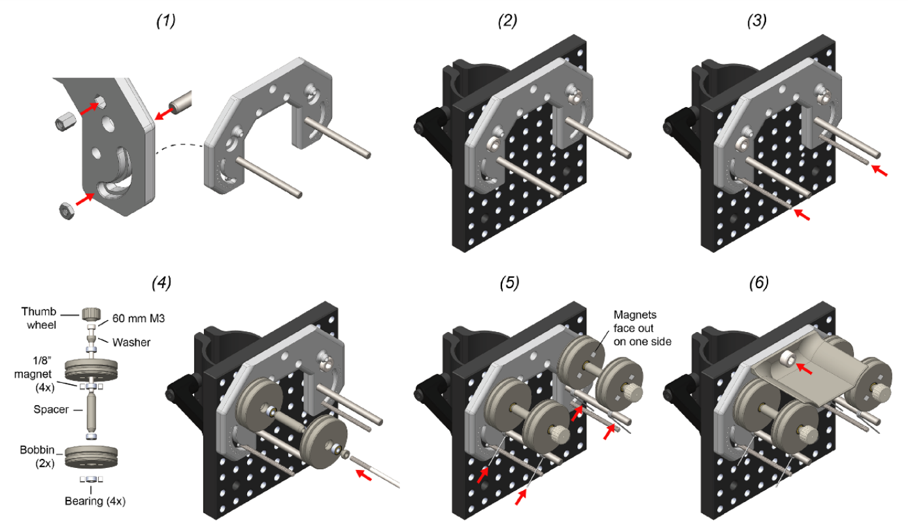
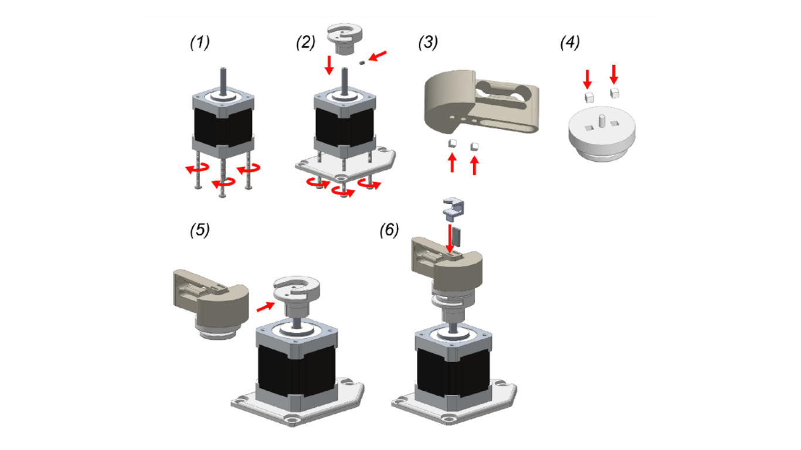
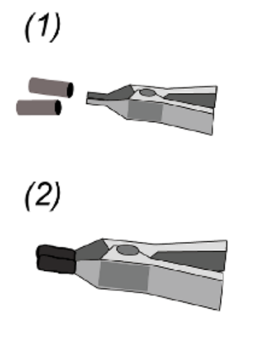
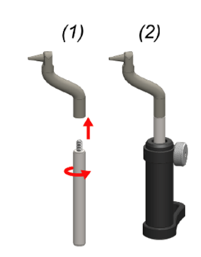
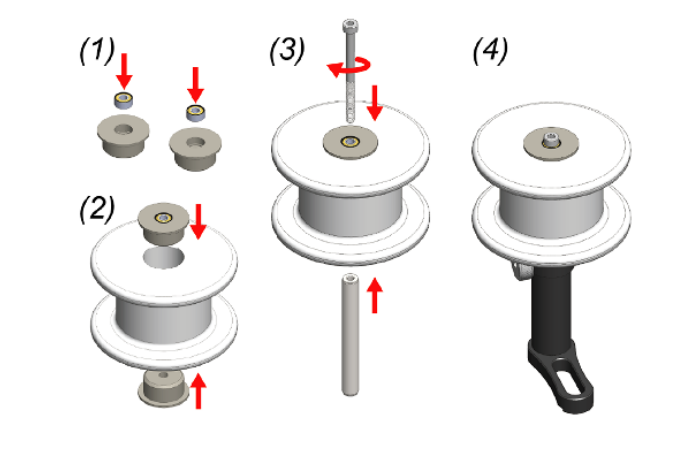
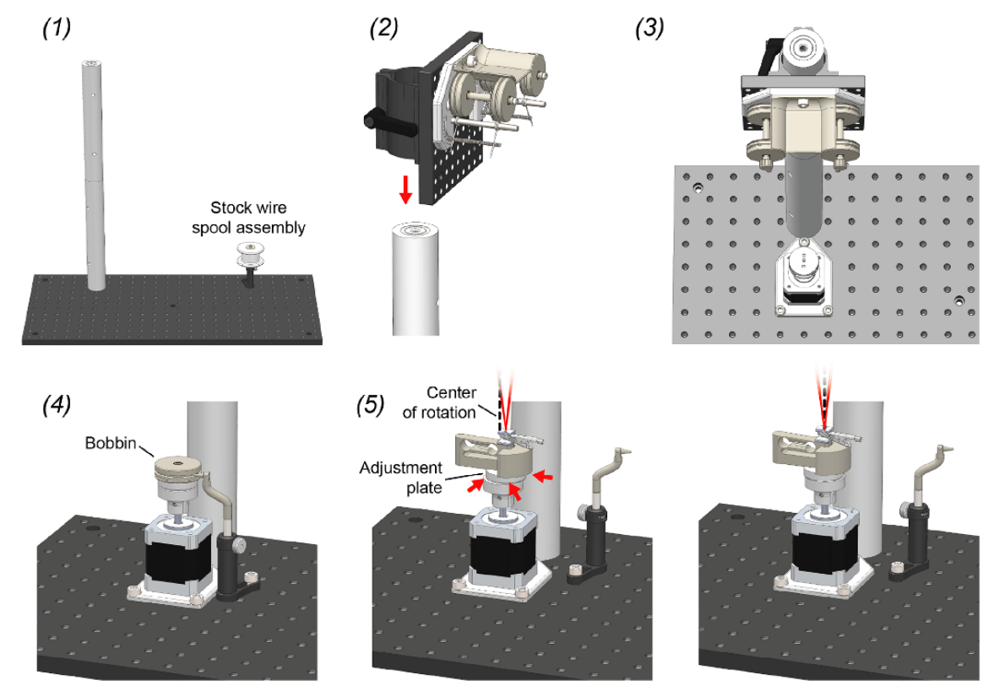

Assembly Guide#
This assembly guide is based on the manuscript with some small changes to adapt it to the parts list as sold by the Open Ephys Store.
Before getting started, make sure you have everything on the parts list.
Wire feeder#
{kind=link}

Insert press-in components into the feeder base. This includes M3 nut (2x), M3 standoff (2x), and 3/16” diameter dowel pin (2x). This requires a mallet.
Mount the feeder base unto the C1545/M mounting clamp using M6 screws (2x). The top of the feeder should be flush with the mounting clamp.
Turn each of the two fully-threaded M3 screws into the M3 nut which behind the feeder base. The position of the rod determines the stiction on each bobbin during wire draw. Lower positions provide less stiction. We have found that the second notch is a good position to start with.
Bobbin assembly: First insert 2 cube magnets into each bobbin with the same polarity. These magnets will be magnetically mated to the alignment plate on the rotor during bobbin loading. Use the 60 mm M3 screw to mount the bobbin assembly to the standoff captive within the feeder base. Repeat for both sides. The thumb-screw head should be glued onto the M3 screw using epoxy prior to this step.
Thread a torsional spring onto the dowel pin. Squeeze it together and then set it between the threaded rod on one side and the shallow groove in each bobbin on the other. Repeat for each bobbin.
Install the wire shield above the bobbins using a single M6 screw.
Motor#

Remove the long, M3 step screws from the bottom of the stepper motor (4x).
Use 40 mm M3 screws (4x) to attach the motor mount to the bottom of the motor.
Fix the rotor base onto the shaft with the M3 set screw.
Press fit two magnets into the alignment plate in the same orientation. Use a bobbin to make sure the polarity is correct; the two parts should mate. Make sure the magnets are pushed down until recessed below the plastic surface so that they do not interfere with the flat mating surface of the piece.
Insert the alignment plate into the slot on the rotor base.
Attach two additional magnets on top of those you just inserted into alignment plate. Press the spring rotor onto these magnets to press fit them into the spring rotor base. This procedure ensures that magnets will be press fit into the spring rotor base with the correct polarity. To prevent magnets going deeper into the alignment plate rather than into the spring rotor, separate the spring rotor from the alignment plate before applying full pressure. Make sure the magnets are recessed below the bottom surface of the spring rotor so that it rests flat on top of the alignment plate.
Push the clip magnet into one of the slots on the spring rotor top. In the remaining slot, press the twist alignment jig into position over the magnet.
Wire clip#
{kind=link}

Put two pieces of heat shrink tubing over the wire clip jaws.
Shrink into position using the hot air gun. This prevents electrode wire from slipping during a draw. The clip can then be stuck under the wire alignment jig (figure 3).
Wire guide#
{kind=link}

Screw the wire-guide into a mini, 6 mm diameter optical post.
Push the optical post into a swivel post holder.
Stock spool#
{kind=link}

Push a bearing into each of the stock spool bearing cases.
Push each of the bearing cases into the stock spool of microwire.
Push a 40 mm, M3 screw through the two bearings and screw into a mini, 6 mm diameter optical post.
Push the optical post into a swivel post holder.
Final assembly#

Screw together the large, 1.5” diameter mounting posts and then screw this long post into either the left or right side of the optical bread board. Mount the stock spool assembly in on the opposite side of the optical breadboard using a M6 screw. Its exact position does not matter.
Mount the feeder assembly on the post using the post mounting clamp on its back.
Mount the rotor assembly directly in front of the post, as close as it will go, using 3 M6 screws.
Mount the wire guide assembly into a position that is in close proximity to the motor assembly using a single M6 screw. The tip of the wire guide should be able to extend into the center grove of a wire bobbin when it is mounted on the rotor bases for wire reloading.
With the wire-clip mechanism installed, slide the adjustment plate around until the motor axis of rotation (dotted black line) is precisely in line with the wire bundle (red lines). When properly aligned, the apex of the wire bundle will appear motionless during motor turning.